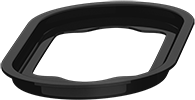
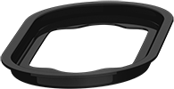

越强大 越冷静
我们擅长于制造惊喜。这块屏幕不只是参数党的狂欢，WQHD 分辨率的彻底升级将在超高亮度、惊艳色彩、强对比度各方面捕获你的芳心。AOD 息屏显示技术，时间日期电量通知置于之上，PRO 6 Plus 将为你带来无限遐想。

英寸
PPI
NTSC 色域
峰值亮度
强对比度
高分辨率
刚柔并济，这是我们打动你的方式。精准的硬朗直角下，依旧掩盖不住 PRO 6 Plus 超凡脱俗的微弧设计。重新设计的机身曲线，30 道工序与 150 小时的精雕细琢，造就了 PRO 6 Plus 的细节之美。CD 纹路摄像头、环形闪光灯、极简设计天线，PRO 6 Plus 不会让任何一个出色的细节从你手中溜走。
有别以往，全新 CD 纹工艺将让相机与手机一样备受瞩目。四轴光学防抖搭配 ƒ/2.0 大光圈及 6P 镜头，即使身处夜景 PRO 6 Plus 也美不胜收。新一代高性能 ISP 图像处理器还大幅提升了色彩、锐度及降噪表现，拍下照片或是视频，都经得起细看。
有效像素
索尼定制
单像素面积
环形闪光灯

在 ES9018K2M 的经典声音下，我们还采用定制化 AD45275 的低功耗运放。XFCB 工艺使得 PRO 6 Plus 在超低功耗下也能有出色的音频表现。依靠 180MHz 增益带宽和 225V/us 压摆率的出色硬件指标加持，PRO 6 Plus 带来了速度与密度俱佳的声音质感，更让 PRO 6 Plus 成为了老烧们眼中爱不释手的玩物。
优秀的传统必须坚持，所以我们保留了为大家乐道的 3D Press——通过按压呼出对应预览结果及手机热键功能。精良的品质需要推敲，所以我们革新并加成了线性重力校准——不惜用双倍时间成本打磨至臻。方寸之间，尽显大观。

不断优化指纹支付的识别速度及识别率已然成为我们前进的惯性。同时，在保证内置芯片可靠性的基础上，我们用特殊的封装技术与工艺保留了光路。不仅能在任意方向有效识别指纹，基于 Live Finger Detection™ 的活体检测技术更能实现对真假手指的判定。

Live Finger Detection™
活体检测技术特调油墨的丝印盖板与 Ring key 拓展工艺，轻松达成全方位 360 度精确指纹识别。然而惊喜绝对不止于此，我们擅长引领科技，Heart Rate Detection 每秒 50 次动态心率检测，控心跳于股掌之间。安全健康，一键守护。

Heart Rate Detection
50 次/秒 动态心率检测

 


PRO 6 Plus 融合 USB 标准新一代技术：Type-C、USB 3.1。从此 USB 端口不再区分正反，更支持 5Gbps 传输带宽，1G 数据，十秒传完。数据线也经过重新设计，最高支持 60W 充电；新加入高温、短路主动保护装置，更耐用、更安全
我们深知用户对电池损耗的担忧，为此选用价格更高的 3400mAh 新型快充电池。900 次循环寿命，约为普通电池 2 倍以上；大数据仿真测试表明：日常使用，3 年无忧。对于成本的毫不吝惜，造就惊喜的电池寿命。